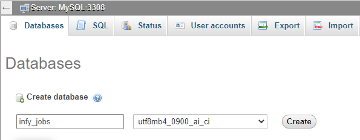
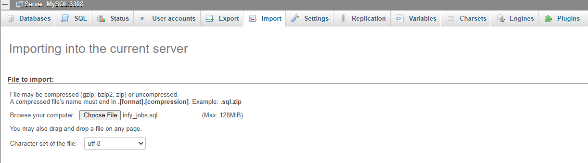
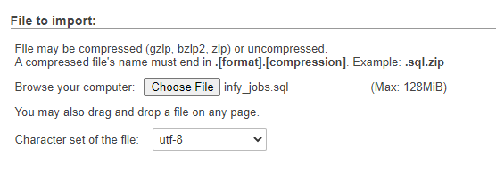
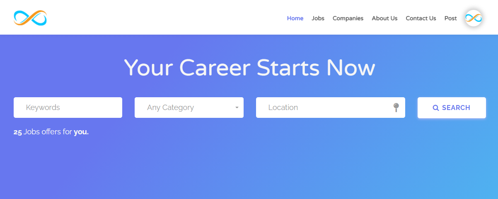

# Guide
The goal of InfyJobs is to make the hiring/job-seeking easy for all employers/candidates.
# Technologies Used
This system uses multiple technologies to give the best possible experience.
- PHP with Laravel Framework
- MySQL 5.6+
- PHP 7.2+
- jQuery
- Ajax
# Installation Guide
We tried our best to make the installation of the system as easy as possible. System Requirements It is assumed that you have primary knowledge Laravel installation knowledge since this application is built on Laravel.
# System Requirement
It is assumed that you have primary knowledge Laravel and JS application installation knowledge since this application is built on Laravel with JS.
You can read about laravel Requirements here
(Optional) You need update below variables in php.ini file if you want to send bigger files.
upload_max_filesize = 50M
max_file_uploads = 50
post_max_size = 100M
# Setup InfyJobs System
If you have purchased the InfyJobs system then you will be able to find the zip named
dist.zip.
If you want to setup InfyJobs into your local environment then you can take help from
here here.
Now if you want to setup InfyJobs on your server then you can directly copy the dist.zip
folder to your web root directory on a server and the following steps:
# 1. Copy files to web server
Upload dist.zip to your web server's root (public_html) and extract it there.
# 2. Setup Default DB
- Open PHPMyAdmin on your server and do a login.

- Click on the Databases tab.

- Create a new database and specify a Database name of your choice and Click Create button.

Now on the left, select the database (infy_jobs) OR the one that you have created.
Click Import in the top menu

- Under Import, choose the default sql file from dist/database/infy_jobs.sql and click button Go.

# 3. Setup environment .env file
- Open .env file from your server's root folder.

- Update your .env file
You need to change the following information into your environment (.env) file.
- APP_NAME - Name of your Application
- APP_URL - Change this URL with your server URL (including trailing path if you are putting it in sub folder or root website)
- DB_HOST - Put your database hostname here
- DB_PORT - Put your database port here if it does not default to 3306
- DB_DATABASE - Change it to your database name
- DB_USERNAME - Name of your database user
- DB_PASSWORD - Password of your database user
You will also need to set up mail configuration, you can read more about here for that setup based on mail service that you use.
- MAIL_DRIVER
- MAIL_HOST
- MAIL_PORT
- MAIL_USERNAME
- MAIL_PASSWORD
- MAIL_ENCRYPTION
- MAIL_FROM_ADDRESS
- MAIL_FROM_NAME
If you want to store your files to direct your s3 bucket then you have to use following
.env variables.
You need to change FILESYSTEM_DRIVER and MEDIA_DISK value to
s3 when you are using AWS file storage.
- AWS_ACCESS_KEY_ID=
- AWS_SECRET_ACCESS_KEY=
- AWS_DEFAULT_REGION=us-east-1
- AWS_BUCKET=
- AWS_ENDPOINT=
- AWS_URL=
Or you can use your choice of storage driver to store your media assets if you want. All of your attachments will be placed into that.
Set Stripe configuration it is using while IPD payments. Here are some links by using it you will get an idea about how to generate stripe API keys.
- STRIPE_KEY=
- STRIPE_SECRET_KEY=
- STRIPE_WEBHOOK_SECRET_KEY=
You have to set webhook URL into stripe, webhook URL should be
YOUR_APP_URL/subscription-update.
Setup the google and facebook social login. Find step To Setup Goolge Login to set up google login, click To Setup Facebook Login to setup the facebook login and click To Setup LinkedIn Login to setup the linkedin login
GOOGLE_CLIENT_ID=
GOOGLE_CLIENT_SECRET=
GOOGLE_REDIRECT={APP_URL}/login/google/callback
FACEBOOK_APP_ID=
FACEBOOK_APP_SECRET=
FACEBOOK_REDIRECT={APP_URL}/login/facebook/callback
LINKEDIN_CLIENT_ID=
LINKEDIN_CLIENT_SECRET=
LINKEDIN_REDIRECT={APP_URL}/login/linkedin/callback
When the trail plan expires for creating job by employer, then we have added another payment gateway called PayPal. Therefore, update the .env file with below keys and find the step to Setup PayPal credentials
PAYPAL_CLIENT_ID=
PAYPAL_SECRET=
# 4. Admin login
You can do admin login by accessing given URL.
YOUR_APP_URL/admin/login
email: admin@infyjobs.com
password: 123456
# 6. Landing page
You can access InfyJobs app url by YOUR_APP_URL. Now you can see below landing page.

# Setup facebook login
You just need facebook app id, app secret and redirect URL for facebook auth login.
You can find steps here
NOTE: DO not forget that Authorized Redirect URI should be e.g YOUR_DOMAIN/login/facebook/callback,
you just need to replace YOUR_DOMAIN by your domain name.
Now you have App ID, App Secret and Redirect URI so replace its value into appropriate .env variable.
Facebook login env variables are following :
FACEBOOK_APP_ID=
FACEBOOK_APP_SECRET=
FACEBOOK_REDIRECT={APP_URL}/login/facebook/callback
# Setup LinkedIn login
You just need linkedin client id, client secret and redirect URL for linkedin auth login.
You can find steps here
NOTE: DO not forget that Authorized Redirect URI should be e.g YOUR_DOMAIN/login/linkedin/callback,
you just need to replace YOUR_DOMAIN by your domain name.
Now you have Client ID, Client Secret and Redirect URI so replace its value into appropriate .env variable.
LinkedIn login env variables are following :
LINKEDIN_CLIENT_ID=
LINKEDIN_CLIENT_SECRET=
LINKEDIN_REDIRECT={APP_URL}/login/linkedin/callback
# Setup google login
You just need google client secret, id and redirect URL for google auth login.
You can find steps here or you can watch video at here
You can watch video here.
NOTE: DO not forget that Authorized Redirect URI should be e.g YOUR_DOMAIN/login/google/callback,
you just need to replace YOUR_DOMAIN by your domain name.
Now you have Client ID, Client Secret and Redirect URI so replace its value into appropriate .env variable.
Goole social login env variables are following :
GOOGLE_CLIENT_ID=
GOOGLE_CLIENT_SECRET=
GOOGLE_REDIRECT={APP_URL}/login/google/callback
# Setup PayPal Credentials
You just need PayPal Client Id, PayPal Secret.
You can find steps here
Once you get the PayPal Client Id and PayPal Secret add the below keys to your .env file.
PAYPAL_CLIENT_ID=
PAYPAL_SECRET=
# Setup Laravel Cookie Consent
You just need to add the below key to your .env file in order to enable the cookie storage.
COOKIE_CONSENT_ENABLED=
# Setup InfyJobs into Local Environment
You can setup InfyJobs into your local by using both zip files, but we recommend to use dist file so you have to perform minimal steps.
Here are some steps to setup InfyJobs into your local environment :
# 1. Install xampp/wamp (if you don't have it).
# 2.
Create folder InfyJobs
- if you are using wamp then create InfyJobs folder under you_path_to_wamp/www/
- if you are using xamp then create InfyJobs folder under you_path_to_xamp/htdocs/
# 3. Unzip dist/src zip to InfyJobs folder
# 4. Point the domain to the uploaded folder
You need to create virtual host first to setup InfyJobs. You can find steps here to create virtual host.
- You can find steps here
to create virtual host on
XAMPP. - You can find steps here
to create virtual host on
WAMP.
Point your domain or subdomain to the InfyJobs folder.
Please note that, InfyJobs must be installed on a primary domain or subdomain. Installing on a sub-folder will not work, for example:
example.com/InfyJobs (Invalid)
localhost/InfyJobs (Invalid) if you are putting it in sub folder or root website)
example.com (Valid)
local.InfyJobs.com (Valid)
InfyJobs.test (Valid)
Open the link to the domain in the browser (Example: https://local.InfyJobs.com).
# Key Features and Concepts
Here are some Key Features and Concepts that InfyJobs provides.
# Multi languages Support
We are supporting 8 languages in each panel (Candidate | Employer | Admin)
- English
- Spanish
- French
- German
- Russian
- Portuguese
- Arabic
- Chinese
# Social login support for Employer/Candidate
Employer/Candidate can directly do login with google or facebook or linkedin if they don't want to register them self.
by doing login social login you will register to system, if your email is not already exists. if your email is already exists then your profile records will be updated.
# Admin Panel
# Dashboard
All the information at a glance about what's happening in the job portal. How many candidates & employers registered so far. How many jobs are posted and active and more. It is the place where portal admin can have a complete idea about the website.
# Candidate Management
Candidates Management Manage all candidates from here. See their profile information and make edits if needed. Even you can create and delete or suspend the candidates.
# Employers Management
Manage all employers from this module. Review their company profile. Create/Edit/Delete and activate/deactivate company accounts.
Admin can mark employer/company as featured or remove the featured employer/company from featured list.
# Reported Jobs
Anyone can report a job if they find something wrong in that. Those reported jobs will be displayed in this section and portal admin can take appropriate action.
# Jobs
Job is the key and most important feature of a job portal. Portal admin can see all the posted jobs by all the employers. He can manage jobs and make edits if needed.
Admin can create a new job on behalf of employer. also, he can mark job as featured and remove the featured jobs too.
# Job Categories
Job Categories Every job can be categorized into a different category based on its purpose. so it can be easy for candidates to find the right job that fits them.
# Skills
Every job can have mentioned skills that are required to complete this job. Different skills are managed here. so employers can mention it while posting jobs and candidates can list these skills in their profile in which they are experts. so candidate shortlisting can be made easy.
# Job Tags
Jobs can be also tagged with a totally custom tag that makes sense to the job.
# Job Skills
Can able to create/update/delete/show job skills. employer can select one or many job skills while posting job.
# Job Types
All job types can be managed here. Employers can use them while creating jobs.
# Job Shifts
Portal admin can manage job shifts here. so the employer can specify in which shift this job needs to be done.
# Job Notifications
Admin can able to send job notifications to the Candidates based on jobs that has been created by specific Employers.
# Company Sizes
Portal admin can define different company size here that employers can mention while creating their profile.
# Salary Periods
Salary periods are the frequency at which Job will be paid and the employer will pay to the hired candidate. Portal admin can manage all salary periods here.
# Marital status
All possible marital status of candidates can be managed in this module by portal admin which candidates can mention in their profile.
# Industries Management
All industries to which jobs belong can be managed into this module.
# Degree Levels
Jobs may require certain degree levels in candidates to be completed. Portal admin can manage different possible degree levels here.
# Functional Areas
Different functional areas of Job can be managed in this module.
# Career Levels
Career levels of candidates can be managed in this module which candidates can use in their profile.
# Salary Currencies
Portal admin can manage different currencies of salary in this section. The salary currency will be specified while creating a job.
# Ownership Types
Employers can have different ownership types. Portal admin can define them here that employers can use in their profiles.
# Blog Post Categories
The blog post can belong to different categories and portal admin can define them here which can be associated later while creating job posts.
# Blog Posts
Portal admin can write blog posts from this section which can help in explaining certain articles about the portal and help to gain the traffic via SEO.
# Subscription Plans
Admin can create a different kind of plans for employers. we are giving default trial plan which will be not deleted. by default employer will get trial plan with 1 allowed jobs, admin can change the allowed jobs count for trial plan.
For new plan creation you have to give details of plan name, allowed jobs for that plan and the plan price.
You can able to create the subscription plan in different currencies.
# Countries
Admin can able to do CRUD operations for Countries, States and Cities.
# Transactions
Admin can see list of transactions created from subscriptions and from the featured jobs and featured companies charges. admin can also able to see the invoice receipt for subscription transactions.
# Settings
Various settings related to Job portal branding like, name, company url, logo, footer, etc. can be managed from this section.
# Front Settings
In front setting admin can add prices for featured jobs and companies. he can also define the featured jobs/companies quota limit. how many jobs should be featured at a time.
Admin can disable the featured jobs and companies feature by using this setting.
# Testimonials
Frontend website home page testimonials can be managed from this section.
# Website CMS
Portal admin can change and manage the content of the website from this section of different pages.
# FAQs
Manage your website FAQs in this module to answer users' frequently asked questions.
# Inquires
The website's contact us form submission is converted to an inquiry which portal admin can see in the admin panel and response them.
# Translation Manager
With this translation manager, one can manage the localization contents with different languages for their website. Even you can create new language for the same.
# Email Templates
Admin can manage email template content.
# Selected Candidate
Admin can see which candidate is selected and which employer has selected that candidate.
# Employer Panel
# Subscription
By Default when employer registered to system he will get free trial plan with 1 trial job. trial job count depend on admin, how many he allows for free plan.
After that when you exceed your limit you will not be able to add more jobs, means Active Jobs. you can add job but as draft. you cannot allow to publish it until and unless you have active subscription with valid job limit.
So employer can upgrade their subscription by purchasing new plan. we are supporting stripe payment gatway for payment as of now.
# Dashboard
This is where an employer can see statistics of his account about currently open jobs, job applications, etc.
# Profile Creation
The employer can manage his company profile from here.
# Post Jobs
The employer can post jobs from this section. He can manage and change job status and also edit the job. He can pause or close the job as well. We have also added PayPal payment gateway when you upgrade your subscription in order to create more jobs.
# Featured Jobs
You can make your job featured by paying the charge for it. featured job charge will be added by admin. featured job will be display on landing page for specific time of period, whatever admin has decided.
# Featured Company
You can mark you company as featured to display it into landing page. you have to pay charge to make your job featured
# Manage Job Applications
In this section, the employer can manage all the job applications of candidates that he received on a particular job
# Shortlist or Reject Candidates
The employer can shortlist to reject candidates who applied to a job from this section. After shortlisting, he/she can talk with the candidate and finally either select or reject.
# Manage Followers
Candidates can follow the companies that he/she wants and employers can see those all followers here.
# Job Seekers (On landing page)
Employer can use this for searching the candidate that which candidates are looking for jos. you can search job seekers by name and by job title.
There is a filter for a gender too. its supporting pagination and you can reset filter by hitting the reset button.
# Transaction History
Employer will be able to see all the transaction that he has made. and able to see the subscription transactions into this module.
#Interview slot management
Added job Stage module.
Employer can able to create/update/delete/show job stages. employer can select one job stage while particular candidate shortlist job.
Employer will shortlist the job application of the candidate then on the action button the job stage link will be displayed. Then Employer can create job stages.
Once the Employer has created the job stage, then the action button may display the slots link.
After clicking on the slots, will be redirected to the slot screen, in which the employer can create multiple slots, after that the candidate will display those slots and he will select or cancel this slot.
When the employer create the slot, then Applied Job Module Slots button will be displayed on the candidate panel, in which the slot created by the employer will be displayed.
# Candidate Panel
# Dashboard
Candidate can see his/her dashboard here which displays his profile with contact and location information.
# Profile Creation
Candidate can create his profile and provide his information here about his expertise and experiences
# Upload Resumes
Candidate can upload multiple resumes based on different skills and experiences in his/her profile which can be used while applying for a job.
# Search & Apply for Job
Candidate can search for a job that fits his expertise and abilities and then apply to that job by mentioning his ability to complete that job.
# List of applied jobs
Candidate can also see the list of jobs where he/she applied. He can also see the status of his job application and get updated when the status of the job application is updated by the employer to shortlisted, rejected, selected, etc.
# Follow Companies
Candidate can follow the company that he/she wants. so at any point in the future, he can see the jobs of that company.
# Favorite Jobs
Candidate can also mark a job as a favorite, so he can later on come and apply to that job.
# CV/Resume Builder
Here candidate can add his details like skills, educations, experiences, social profile's etc. candidate can also remove the details if they don't want it.
The interesting feature is export, we are supporting the resume export from the details you entered. you can just print it out or export the resume as pdf file.
# Report Job
If something is wrong about the job then he/she can report the job to the portal admin, so he can take appropriate action.
# Report Company
Candidate can also report a company if he feels something unusual about the employer and can send his note while reporting a company.
# Share job with Friends
Candidate can also share a job with his/her friends if he feels that this job can be useful to his/her friends.
# Share job on social platforms
You can share job link direct to facebook, linkedin, gmail, twitter, pinterest.
# Job Alert
Here candidate will notify by the email when some employer will add new jobs to particular category.
Candidate can disable this email notification settings. and select specific category in which he/she is interested to get emails.